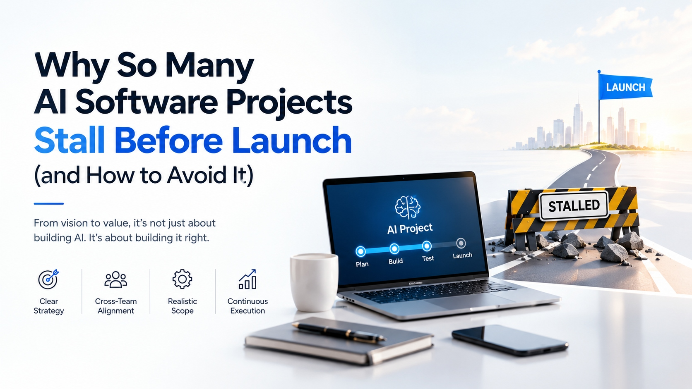

Why So Many AI Software Projects Stall Before Launch (and How to Avoid It)

Few AI software projects fail outright. Most simply stop moving. A prototype impresses in a demonstration, the launch date slips once and then again, and eventually the initiative is described as “paused.” The cause is rarely the model. It is usually a decision that was never made, made too late, or made by the wrong people. A disciplined AI implementation roadmap exists to surface those decisions early, while they are still inexpensive to change.
For leaders accountable for results, the cost of a stalled project is not only the budget spent. It is also the sponsor’s confidence, the momentum among the people who were promised a better way of working, and the months in which a competitor ships first.
This briefing sets out why projects stall between “build” and “launch,” the signals that appear before a stall becomes visible, and the questions worth asking before the next sprint is approved.
Four conditions that separate shipped projects from stalled ones
Projects that reach launch tend to share the same foundations. Projects that stall usually lack at least one.
Clear strategy
A defined business problem with a baseline and a measurable definition of success.
Cross-team alignment
Business, technology, data, and risk functions agree on goals and ownership.
Realistic scope
A first release small enough to finish, and large enough to prove value.
Continuous execution
Monitoring, feedback, and improvement that continue well after launch.
Six reasons projects stall between build and launch
A problem defined as a technology
Early signal: the team can name the model but not the metric.
Remedy: state the problem and its baseline in operational terms before any build begins.
Data that works only in the demonstration
Early signal: quality drops when the system meets live records.
Remedy: name authoritative sources and their owners before development starts.
Scope that grows faster than delivery
Early signal: each sprint adds features, and none removes risk.
Remedy: agree a first release that proves value, then protect it from new requests.
Outcomes without an owner
Early signal: delivery is tracked, while adoption is not.
Remedy: appoint a business owner accountable for results, not only for the build.
A pilot with no route to production
Early signal: integrations, monitoring, and support appear on the plan only after the pilot ends.
Remedy: design for operation from the first pilot, not after it.
Governance that arrives last
Early signal: security and compliance reviews begin after the build is complete.
Remedy: classify risk at the start and match controls to the cost of being wrong.
What to settle at each stage
Each stage removes one category of uncertainty that would otherwise surface later, at higher cost.
| Stage | Decision to settle | Evidence to request |
|---|---|---|
| Plan | The success metric and its baseline | A one-page problem statement |
| Prepare | Data ownership, quality, and access | A source list with named owners |
| Build | The scope of the first release | An agreed and protected scope |
| Test | Behavior on messy and unusual inputs | Results on realistic data and edge cases |
| Launch | Rollout stages and accountability | A staged plan with named owners |
| Improve | Whether to continue, change, or retire | A review against the original baseline |
Six questions to ask before approving the next sprint
- Can the sponsor state the success metric in one sentence?
- Which data sources will the system rely on in production, and who owns each one?
- What is the smallest release that would prove the value, and is it protected from new requests?
- Who is accountable for adoption and results, not just for delivery?
- What must exist for the pilot to operate in production: integrations, monitoring, and support?
- Which security, privacy, and compliance reviews have already started?
Ready to move your AI project from plan to launch?
Speak with the team behind this guide about AI software development, from readiness and roadmap to delivery and support.
Visit zignuts.com